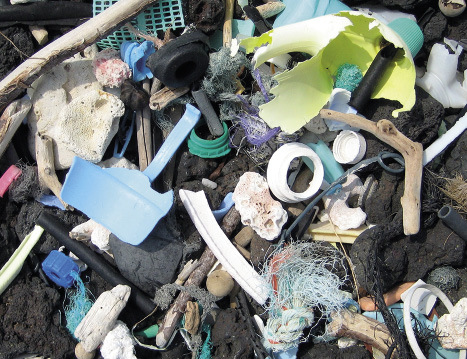

<div class="container">
  <div id="contents" class="col-md-12 main-content"><h1 xmlns="http://www.w3.org/1999/xhtml" id="toc-id-9">Plastiek</h1>
    
    <p xmlns="http://www.w3.org/1999/xhtml" class="x--Body-opener">In hierdie hoofstuk gaan jy oor verskillende tipes plastiek leer. Jy gaan ook leer dat plastiek herwin
kan word en hoekom dit belangrik is dat plastiek herwin word.</p>

    <p xmlns="http://www.w3.org/1999/xhtml" class="x--Body-opener para-style-override-30"><b>Nota aan die onderwyser:
</b></p>

    <p xmlns="http://www.w3.org/1999/xhtml" class="x--Body-opener">Leerders moet plastiekprodukte en -houers na die skool bring vir hierdie week se aktiwiteite. Figuur 1
stel ’n paar tipes plastiekprodukte voor wat die leerders kan bring.
</p>

    <p xmlns="http://www.w3.org/1999/xhtml" class="x--Body-opener">Dit is belangrik dat leerders ’n wye verskeidenheid plastiekprodukte bring. Hulle moet die
plastiekprodukte, wat herwinningskodes op die onderkant van die houers het, bring. Die kodes help
om die tipe plastiek waarvan die houers gemaak is, te identifiseer.</p>

    <p xmlns="http://www.w3.org/1999/xhtml" class="x--Body-opener para-style-override-31">Die versameling produkte moet helder, deurskynende, en donker tipes plastiek insluit, asook
harde en sagte tipes plastiek. ’n Paar voorbeelde van wat leerders na die skool kan bring, is
koeldrankbottels, melkbottels, grondbootjiebotterhouers, sjampoebottels, polistireenkoppies,
margarienhouers, plastiekborde, plastiek eetgerei, vrieskas sakkies, plastiekplakkies, kamme,
kosbakke, en/of meetkundedriehoeke.</p>

   <figure xmlns="http://www.w3.org/1999/xhtml">


<figcaption>Figuur 1: Bring plastiek items soos hierdie skool toe vir hierdie week se lesse.
</figcaption>
</figure>

    <h2 xmlns="http://www.w3.org/1999/xhtml" id="toc-id-10">Wat is plastiek en wat is hulle eienskappe?</h2>

    <p xmlns="http://www.w3.org/1999/xhtml" class="x--Body-text-1-3">Tot omtrent ’n 100 jaar gelede is die meeste klere en
ook die meeste gereedskap en toestelle van plant-
of diere-materiaal, soos katoen, wol, hout, dierevel,
en vere gemaak. Toe het chemiese wetenskaplikes
maniere ontdek om sintetiese materiaal te maak wat
soortgelyke eienskappe het as die van natuurlike
materiaal, en soms met bruikbare eienskappe wat
natuurlike materiale nie het nie. Die meeste van
hierdie sintetiese materiale word van minerale olies
gemaak, en die meeste van hulle word plastiek
genoem. Sintetiese materiale is gewoonlik goedkoper
en ligter as natuurlike materiale met dieselfde
eienskappe, en fabrieke kan die sintetiese materiaal in
unieke vorms giet.</p>

    <div xmlns="http://www.w3.org/1999/xhtml" class="aside">
      <p class="x--Body-box-no-indent">Wanneer jy van naderby na ’n
stuk lap kyk, sal jy sien dat dit
geweef is met baie dun drade,
soos baie dun stukke tou.
Deur ’n mikroskoop te gebruik,
kan jy selfs nader kyk. Jy sal
dan sien dat elke draad van
verskillende lang, dun stukke
gemaak is en hierdie stukke
is inmekaar gehak of gedraai.
Hierdie lang dun stukke word
vesels genoem. In hierdie
vlakbyopname-foto hieronder,
kan jy die plantvesels waarvan
’n spesifieke materiaal gemaak
is, sien.</p>
    </div>

    <p xmlns="http://www.w3.org/1999/xhtml" class="x--Body-indent-1-3">Liniale is vroeër jare van hout gemaak, maar word
deesdae van plastiek gemaak. Emmers is eers van
hout gemaak, en toe van gegalvaniseerde staal, maar
deesdae word hulle ook van plastiek gemaak. Melk is
vroeër jare in swaar glas- of staalhouers gebottel,
maar word nou in plastiekbottels gebottel. Toue is
vroeër jare van garingboomvesels gevleg, maar die
meeste toue word vandag van plastiekvesels gemaak.
Motors is meestal van staal, hout en leer gemaak,
maar deesdae word baie onderdele van plastiek
gemaak.</p>

    <figure xmlns="http://www.w3.org/1999/xhtml">


<figcaption>Figuur 2: ‘n Vlakbyopname-foto
van plantvesels wat gevleg en
geweef is om ’n materiaal te
maak
 </figcaption>
</figure>

    <p xmlns="http://www.w3.org/1999/xhtml" class="x--Body-indent-1-3">Oral om jou is daar voorwerpe wat van verskillende
tipes plastiek gemaak is. Kyk na jou skoensole, jou pen
en liniaal. In die winter dra jy dalk ’n wollerige baadjie
wat regtig voel soos wol. Daardie wollerige materiaal
is eintlik van plastiekvesels gemaak. Baie klere en die
meeste matte word van plastiekvesels gemaak.</p>

    <p xmlns="http://www.w3.org/1999/xhtml" class="x--Body-indent-1-3">Sintetiese materiale het ook nadele. Jy het in graad
8, kwartaal 3, hoofstuk 8, geleer dat meeste plastiek
nie bio-afbreekbaar soos natuurlik materiale is nie. Dit
beteken dat plastiekafval vir baie lank hou.</p>

    <figure xmlns="http://www.w3.org/1999/xhtml">


<figcaption>Figuur 3: ’n Fleece-kombers
word gemaak van die vesels van
’n tipe plastiek wat polistireen
genoem word.
 </figcaption>
</figure>

    <p xmlns="http://www.w3.org/1999/xhtml" class="x--Body-indent-1-3"><b>Plastiek</b> is voorbeelde van polimere. ’n Polimeer
is ’n materiaal wat van <b>molekules</b> gemaak is wat
koolstofatome, waterstofatome, en ander atome bevat
wat in lang kettings aan mekaar verbind is. Katoen,
wol, leer, hare, stysel, hout en rubber is voorbeelde van
natuurlike polimere. Die molekule kettings verbind
op verskillende maniere sodat daar baie verskillende
polimere met verskillende eienskappe is.</p>

    <p xmlns="http://www.w3.org/1999/xhtml" class="x--Body-indent-1-3">Plastiek is mensgemaakte (sintetiese) polimere.
Hulle word meestal van minerale olies gemaak omdat
die molekules in hierdie olie kettings, koolstofatoom
kettings is, maar dat hierdie kettings korter is as die
wat in plastiek voorkom.</p>

    <div xmlns="http://www.w3.org/1999/xhtml" class="aside">
      <p class="x--Body-box-no-indent">Die woord <b>plastiek</b> is
oorspronklik gebruik om
materiale soos rubber se
eienskappe te beskryf, naamlik
dat dit ’n nuwe vorm gegee
kan word. Die meeste sintetiese
polimere het hierdie eienskappe
en daarom is die naam
"plastiek" aan hulle gegee.</p>

      <p class="x--Body-box-no-indent"><b>Molekules</b> word gemaak
van atome wat aan mekaar
geheg is. Jy weet reeds van
Natuurlike Wetenskap dat
molekules so klein is dat mens
dit nie eers met ’n mikroskoop
kan sien nie.</p>
    </div>

    <h4 xmlns="http://www.w3.org/1999/xhtml" class="x--Head-C para-style-override-5">Verskillende eienskappe van plastiek</h4>

    <p xmlns="http://www.w3.org/1999/xhtml" class="x--Body-Text">fhangende van die tipe plastiek en die vorm waarin dit gegiet is, kan plastiek
dalk ’n paar van die volgende eienskappe besit:</p>

    <ul xmlns="http://www.w3.org/1999/xhtml"><li class="x--Body-text-bullet">
      <b>Deurskynend</b> beteken dat jy duidelik deur die plastiek kan sien.</li>

      <li class="x--Body-text-bullet">
      <b>Ligdeurlatend</b> beteken dat lig daardeur kan skyn selfs al kan jy nie deur die
plastiek sien nie.</li>

      <li class="x--Body-text-bullet">
      <b>Sterk</b> beteken dat die plastiek nie sal breek of splinter wanneer dit geslaan of
laat val word nie.</li>

      <li class="x--Body-text-bullet">
      <b>Elasties</b> beteken dat jy die plastiek redelik ver kan rek en dat dit weer na die
oorspronklike vorm terugkeer.</li>

      <li class="x--Body-text-bullet">
      <b>Buigbaar</b> beteken dat die plastiek kan buig sonder om te breek.</li>

      <li class="x--Body-text-bullet">
      <b>Onbuigbaar</b> beteken dat die plastiek nie sal buig of rek nie, maar as jy genoeg
krag toepas om die plastiek te buig en rek, sal dit breek of selfs versplinter.</li>

      <li class="x--Body-text-bullet">
      <b>Hittewerend</b> beteken dat die plastiek nie maklik sal smelt nie.</li>

      <li class="x--Body-text-bullet">
      <b>Brandwerend</b> beteken dat die plastiek nie maklik sal brand nie.</li>

      <li class="x--Body-text-bullet">
      <b>Waterdig</b> beteken dat water nie deur die plastiek sal vloei nie.</li>

      <li class="x--Body-text-bullet">
      <b>Skuim</b> beteken dat die plastiek geprosesseer word deur dit met klein lugborrels
te vul.</li>

      <li class="x--Body-text-bullet">
      <b>Elektries geïsoleer</b> beteken dat elektrisiteit nie deur die plastiek gelei kan word
nie.</li>

      <li class="x--Body-text-bullet">
      <b>Termies</b> geïsoleer beteken dat hitte nie maklik deur die plastiek gelei kan word
nie.</li>
    </ul><p xmlns="http://www.w3.org/1999/xhtml" class="x--Body-indent para-style-override-3">In baie van hierdie gevalle kan jy nie net sê dat die plastiek ’n spesifieke
eienskap het of nie ’n spesifieke eienskap het nie. Jy kan byvoorbeeld nie net sê ’n
tipe plastiek is buigbaar nie. Jy moet kan sê hoe buigbaar dit is, byvoorbeeld baie
buigbaar of slegs effens buigbaar.</p>

    
<h3 xmlns="http://www.w3.org/1999/xhtml" class="x--Head-investigation">Ondersoek eienskappe van plastiek voorwerpe</h3>

    <p xmlns="http://www.w3.org/1999/xhtml" class="x--Body-Text para-style-override-6">Werk in spanne van drie of vier.</p>

    <p xmlns="http://www.w3.org/1999/xhtml" class="x--Body-indent">Vir hierdie aktiwiteit het jou onderwyser jou gevra om verskillende plastiek
voorwerpe skool toe te bring.</p>

    <p xmlns="http://www.w3.org/1999/xhtml" class="x--Body-indent para-style-override-24">Elke span moet twee van die voorwerpe neem en hulle eienskappe beskryf. Skryf
die naam van die voorwerp neer en skryf dan die eienskappe langsaan.</p>

    <p xmlns="http://www.w3.org/1999/xhtml" class="x--Body-investigation-hanging">1. Voorwerp
 1:</p>
    <hr xmlns="http://www.w3.org/1999/xhtml"/><p xmlns="http://www.w3.org/1999/xhtml" class="x--Body-investigation-hanging">2. Voorwerp
 2:</p>
    <hr xmlns="http://www.w3.org/1999/xhtml"/><p xmlns="http://www.w3.org/1999/xhtml" class="x--Body-indent para-style-override-24">Ruil nou jou twee plastiek voorwerpe om met die van die ’n ander span wat
verskillende plastiek voorwerpe as jou span het. Skryf dan die name en eienskappe
van die ander span se voorwerpe neer.</p>

    <p xmlns="http://www.w3.org/1999/xhtml" class="x--Body-investigation-hanging">3. Voorwerp 3:</p>
    <hr xmlns="http://www.w3.org/1999/xhtml"/><p xmlns="http://www.w3.org/1999/xhtml" class="x--Body-investigation-hanging">4. Voorwerp 4:</p>
    <hr xmlns="http://www.w3.org/1999/xhtml"/><h2 xmlns="http://www.w3.org/1999/xhtml" id="toc-id-11">Tipes plastiek, herwinning en identifikasiekodes</h2>

    <h4 xmlns="http://www.w3.org/1999/xhtml" class="x--Head-C para-style-override-5">Termoplastiese en termoverharde plastiek</h4>

    <p xmlns="http://www.w3.org/1999/xhtml" class="x--Body-Text">Sommige plastiek is sag of soortgelyk aan vloeistof, totdat jy dit op ’n spesifieke
manier verhit, of totdat jy ’n ander chemikalieë daarby meng. Dit “set” of word
hard en rigied. Nadat dit geset het, kan jy dit nie weer sag maak deur dit te verhit
nie. Jy kan dit dus nie in ander produkte vervorm nie. Dit sal wel brand, maar
dit sal nie weer sag word nie. Plastiek soos hierdie word termoverharde plastiek
genoem.</p>

    <p xmlns="http://www.w3.org/1999/xhtml" class="x--Body-indent-1-3">Voorbeelde hiervan is epoksi-hars gom,
skoensole, motorbande, elektriese kragproppe,
pothandvatsels, elektroniese stroombane en kombuis
werkoppervlaktes. Termoverharde plastiek kan
nie herwin word deur dit te verhit nie. Dit kan wel
weer teruggeskakel word na olie toe, deur ’n hoë- temperatuurproses wat "pirolise" genoem word.</p>

    <div xmlns="http://www.w3.org/1999/xhtml" class="aside">
      <p class="x--Body-box-heading"><b>Veiligheidswaarskuwing:</b></p>

      <p class="x--Body-box-no-indent">Dra beskermende hittewerende
      handskoene, beskermende bril en brandwerende klere indien jy gaan probeer om plastiek te
      smelt; gesmelte plastiek kan spat en kan erge brandwonde veroorsaak.</p>

      <p class="x--Body-box-no-indent">Moet nooit probeer om 
      plastiek te smelt met ’n vlam nie; die plastiek kan brand en 
      giftige gasse vrystel.</p>
    </div>

    <p xmlns="http://www.w3.org/1999/xhtml" class="x--Body-indent-1-3">Ander tipes plastiek smelt wanneer dit verhit word
en kan dan in nuwe produkte vervorm word. Dit
word <b>termoplastiese plastiek</b> genoem. Koeldrank- en
skoonmaakmiddelbottels is termoplasties; indien jy
kookwater daarin gooi kan jy die vorm verander.</p>

    <h4 xmlns="http://www.w3.org/1999/xhtml" class="x--Head-C para-style-override-5">Waarom moet ons plastiek herwin?</h4>

    <p xmlns="http://www.w3.org/1999/xhtml" class="x--Body-Text">Afvalplastiek in die omgewing is ’n groot probleem. Die meeste tipes plastiek is nie
bio-afbreekbaar nie en sal vir honderde jare in die omgewing wees.</p>

    <p xmlns="http://www.w3.org/1999/xhtml" class="x--Body-indent">In die foto hieronder kan jy ’n grondopvulling of afvalhoop sien. Afvalhope is
gewoonlik naby stede geleë sodat vullisverwydering-trokke nie te ver hoef te ry om
afval weg te gooi nie. Dit beteken dat mense nooit huise op daardie grond kan bou
of landerye op die grond kan maak nie.</p>

    <p xmlns="http://www.w3.org/1999/xhtml" class="x--Body-indent-1-3 para-style-override-32">Enige materiale wat in ’n afvalhope
beland, sal nooit weer gebruik word
nie. Mense gaan meer rou materiale
soos olie, steenkool, staal, hout of
glas uit die aarde moet uithaal. Hulle
sal dan meer steenkool moet brand
om elektrisiteit op te wek om die rou
materiale te prosesseer.</p>

    <p xmlns="http://www.w3.org/1999/xhtml" class="x--Body-indent-1-3 para-style-override-32">Nie alle plastiek beland in
afvalhope nie. Baie plastiek bly net
daar lê waar mense dit gegooi het, of 
   dit word in riviere gegooi en beland dan in die oseaan.
</p>

    <figure xmlns="http://www.w3.org/1999/xhtml">


<figcaption>Figuur 4: Plastiekafval op die kus. (Hierdie foto
 is in Hawaii geneem waar daar swart vulkaniese ar swart vulkaniese
dan in die oseaan.

</figcaption>
</figure>

    <p xmlns="http://www.w3.org/1999/xhtml" class="x--Body-indent">In sommige dele van die oseaan veroorsaak die wind dat die water in sirkels
op een plek vloei. Hierdie areas is baie groter in Suid-Afrika. Die areas word
"oseaankolke" genoem. Hier kom miljoene drywende plastiekbottels, sakke en
plastiekvlokkies van min of meer hierdie blokkie se grootte

    ☐ bymekaar.</p>

    <p xmlns="http://www.w3.org/1999/xhtml" class="x--Body-indent-1-3">Skilpaaie kan die plastieksakke met jellievisse
verwar en dit insluk, wat veroorsaak dat die skilpaaie
doodgaan. Groot en klein visse sluk die klein
plastiekvlokkies in. Seevoëls eet die vis en die plastiek
in die vis veroorsaak die dood van die seevoëls.</p>

      <p xmlns="http://www.w3.org/1999/xhtml" class="x--Body-indent">Plastiek wat in die omgewing gegooi word, is dus ’n
baie groot probleem. Maar baie van hierdie plastiek
kan <b>herwin</b> word.</p>
    
    <div xmlns="http://www.w3.org/1999/xhtml" class="aside">
      <p class="x--Body-box-no-indent">Om te <b>herwin</b> beteken om
      afvalprodukte te prosesseer en sodoende nuwe produkte daarvan te maak.</p>
    </div>

  
    <p xmlns="http://www.w3.org/1999/xhtml" class="x--Body-investigation-hanging">1. Skryf twee redes neer waarom ons plastiek items moet herwin.</p>
    <hr xmlns="http://www.w3.org/1999/xhtml"/><h4 xmlns="http://www.w3.org/1999/xhtml" class="x--Head-C para-style-override-5">Verskillende tipes plastiek benodig verskillende prosesse om
herwin te word</h4>

    <p xmlns="http://www.w3.org/1999/xhtml" class="x--Body-Text para-style-override-31">Afval van verskillende tipes plastiek moet sorteer word sodat elke tipe plastiek
apart herwin kan word. Vervaardigers het saamgestem om sekere kodes te gebruik
wat aandui van watter tipe plastiek die produk gemaak is.</p>

    <table xmlns="http://www.w3.org/1999/xhtml" id="table-8" class="No-Table-Style"><tbody><tr class="Row-Column-71"><td class="cell-style-override-4">
            <p class="x--Body-Text para-style-override-6"><b>Kodes en name</b></p>
          </td>

          <td class="cell-style-override-4">
            <p class="x--Body-Text para-style-override-6"><b>Voorbeelde van 
produkte </b></p>
          </td>

          <td class="cell-style-override-4">
            <p class="x--Body-Text para-style-override-6"><b>         Eienskappe </b></p>
          </td>

          <td class="cell-style-override-4">
            <p class="x--Body-Text para-style-override-6"><b>Herwonne
produkte</b></p>
          </td>
        </tr><tr class="Row-Column-73"><td class="cell-style-override-4">
            <p class="x--Body-Text"><span></span> </p>

            <p class="x--Body-Text"/>
          </td>

          <td class="cell-style-override-4">
            <p class="x--Body-Text">koeldrankbottels 
</p>
          </td>

          <td class="cell-style-override-4">
            <p class="x--Body-Text">helder; sterk; goeie 
versperring vir 
vloeistowwe en 
gasse; hittewerend 
</p>
          </td>

          <td class="cell-style-override-4">
            <p class="x--Body-Text">vesels om
materiale vir
klere, sakke en
matte te maak;
voedsel en
koeldrankhouers
</p>
          </td>
        </tr><tr class="Row-Column-75"><td class="cell-style-override-4">
            <p class="x--Body-Text"><span></span> </p>

            <p class="x--Body-Text"/>
          </td>

          <td class="cell-style-override-4">
            <p class="x--Body-Text">bottels vir melk, 
sappe, water en 
wasgoedmiddels 
</p>
          </td>

          <td class="cell-style-override-4">
            <p class="x--Body-Text">ietwat rigied; sterk; 
weerstandig teen 
chemikalieë; goeie 
 versperring vir 
 vloeistowwe en 
 gasse 
</p>
          </td>

          <td class="cell-style-override-4">
            <p class="x--Body-Text">bottels; pype;
emmers; kratte;
blompotte;
asdromme;
plastiekplanke;
vloerteëls
</p>
          </td>
        </tr><tr class="Row-Column-16"><td class="cell-style-override-4">
            <p class="x--Body-Text"><span></span> </p>

            <p class="x--Body-Text"/>
          </td>

          <td class="cell-style-override-4">
            <p class="x--Body-Text">pype; omhulsels 
van elektriese 
drade 
</p>
          </td>

          <td class="cell-style-override-4">
            <p class="x--Body-Text">weerstandig teen 
chemikalieë; 
 elektries isolerend; 
 sterk; kan rigied of 
 buigbaar wees 
</p>
          </td>

          <td class="cell-style-override-4">
            <p class="x--Body-Text">geute; vloerteëls
en matte;
elektriese bokse;
tuinslange
</p>
          </td>
        </tr><tr class="Row-Column-76"><td class="cell-style-override-4">
            <p class="x--Body-Text"><span></span> </p>

            <p class="x--Body-Text"/>
          </td>

          <td class="cell-style-override-4">
            <p class="x--Body-Text">dun plastieklae 
om byvoorbeeld 
kos te bedek of 
boeke mee oor 
te trek; buigbare 
deksels en bottels 
</p>
          </td>

          <td class="cell-style-override-4">
            <p class="x--Body-Text">buigbaar; sterk; 
goed om dinge te 
seël; weerstandig 
 teen vog 
</p>
          </td>

          <td class="cell-style-override-4">
            <p class="x--Body-Text">asdromsakke;
vloerteëls;
asdromme
</p>
          </td>
        </tr><tr class="Row-Column-73"><td class="cell-style-override-4">
            <p class="x--Body-Text"><span></span> </p>

            <p class="x--Body-Text"/>
          </td>

          <td class="cell-style-override-4">
            <p class="x--Body-Text">groot voorwerpe 
wat gegiet is, 
byvoorbeeld 
motoronderdele 
</p>
          </td>

          <td class="cell-style-override-4">
            <p class="x--Body-Text">weerstandig teen 
chemikalieë; sterk; 
 hittewerend; 
 versperring teen vog 
</p>
          </td>

          <td class="cell-style-override-4">
            <p class="x--Body-Text">motor battery
omhulsels;
besems en
borsels;
asdromme;
skinkborde
</p>
          </td>
        </tr><tr class="Row-Column-77"><td class="cell-style-override-4">
            <p class="x--Body-Text"><span></span> </p>

            <p class="x--Body-Text"/>
          </td>

          <td class="cell-style-override-4">
            <p class="x--Body-Text">beskermende 
verpakking; 
weggooibare 
bekers; 
skinkborde; hitte- 
isolering (veral in 
dakke) 
</p>
          </td>

          <td class="cell-style-override-4">
            <p class="x--Body-Text">kan rigied of 
gespons wees; 
lae smeltpunt; 
wanneer gespons 
’n baie goeie 
  hitte-isoleerder 
</p>
          </td>

          <td class="cell-style-override-4">
            <p class="x--Body-Text">plate vir
ligskakelaars;
liniale; hitte-
isolering;
sponsverpakking
</p>
          </td>
        </tr><tr class="Row-Column-78"><td class="cell-style-override-4">
            <p class="x--Body-Text"><span></span> </p>

            <p class="x--Body-Text"/>
          </td>

          <td class="cell-style-override-4">
            <p class="x--Body-Text">akriel of 
perspeks- velle 
(kan gebruik word 
as vervanging van 
vensters); “ABS” 
    vir die maak van 
    motorbuffers 
</p>
          </td>

          <td class="cell-style-override-4">
            <p class="x--Body-Text">afhangende van 
die tipe plastiek; 
“ABS” het baie goeie 
    skokabsorberende 
    eienskappe 
</p>
          </td>

          <td class="cell-style-override-4">
            <p class="x--Body-Text">plastiekplanke
</p>
          </td>
        </tr></tbody></table>
        <h2 xmlns="http://www.w3.org/1999/xhtml" id="toc-id-12">Wat het jy geleer?</h2>

    
<h3 xmlns="http://www.w3.org/1999/xhtml" class="x--Head-investigation">Identifiseer die tipes plastiek op die tafel</h3>

    <p xmlns="http://www.w3.org/1999/xhtml" class="x--Body-Text">Kyk weer na die vier plastiekprodukte wat jou span in die aktiwiteit by afdeling
9.1 bestudeer het. Draai die items onderstebo en probeer om die simbool vir die
herwinningskode te vind.
</p>

    <p xmlns="http://www.w3.org/1999/xhtml" class="x--Body-investigation-hanging">1. Voltooi die tabel hieronder:
</p>

    <table xmlns="http://www.w3.org/1999/xhtml" id="table-9" class="No-Table-Style table-style-override-1"><tbody><tr class="Row-Column-15"><td class="cell-style-override-4"/>

          <td class="cell-style-override-4">
            <p class="x--Body-Text para-style-override-6"><b>Kode en naam van
die tipe plastiek
</b></p>
          </td>

          <td class="cell-style-override-4">
            <p class="x--Body-Text para-style-override-6"><b>Eienskappe
</b></p>
          </td>

          <td class="cell-style-override-4">
            <p class="x--Body-Text para-style-override-6"><b>Watter produkte
kan van hierdie
herwonne materiaal
gemaak word?
</b></p>
          </td>
        </tr><tr class="Row-Column-80"><td class="cell-style-override-4">
            <p class="x--Body-Text">Voorwerp 1
</p>
          </td>

          <td class="cell-style-override-4"/>

          <td class="cell-style-override-4"/>

          <td class="cell-style-override-4"/>
        </tr><tr class="Row-Column-80"><td class="cell-style-override-4">
            <p class="x--Body-Text">Voorwerp 2
</p>
          </td>

          <td class="cell-style-override-4"/>

          <td class="cell-style-override-4"/>

          <td class="cell-style-override-4"/>
        </tr><tr class="Row-Column-80"><td class="cell-style-override-4">
            <p class="x--Body-Text">Voorwerp 3
</p>
          </td>

          <td class="cell-style-override-4"/>

          <td class="cell-style-override-4"/>

          <td class="cell-style-override-4"/>
        </tr><tr class="Row-Column-80"><td class="cell-style-override-4">
            <p class="x--Body-Text">Voorwerp 4</p>
          </td>

          <td class="cell-style-override-4"/>

          <td class="cell-style-override-4"/>

          <td class="cell-style-override-4"/>
        </tr></tbody></table><p xmlns="http://www.w3.org/1999/xhtml" class="x--Body-investigation-hanging">2. Hoekom verkies vervaardigers gereeld om hulle produkte van plastiek te maak?
</p>
    <hr xmlns="http://www.w3.org/1999/xhtml"/><p xmlns="http://www.w3.org/1999/xhtml" class="x--Body-investigation-hanging">3. Waarom plaas vervaardigers die herwinningskodes op die bodem van die
houers?
</p>
    <hr xmlns="http://www.w3.org/1999/xhtml"/><p xmlns="http://www.w3.org/1999/xhtml" class="x--Body-investigation-hanging">4. Waarom gebruik hulle nie net dieselfde tipe plastiek vir alles wat vervaardig
word nie?
</p>
    <hr xmlns="http://www.w3.org/1999/xhtml"/><p xmlns="http://www.w3.org/1999/xhtml" class="x--Body-investigation-hanging">5. Dink aan drie voorwerpe wat nie van plastiek gemaak kan word nie.
</p>
    <hr xmlns="http://www.w3.org/1999/xhtml"/>
    
<h3 xmlns="http://www.w3.org/1999/xhtml" class="x--Head-investigation">Volgende week</h3>

    <p xmlns="http://www.w3.org/1999/xhtml" class="x--Body-Text">In die volgende hoofstuk gaan jy leer hoe plastiek herwin word om nuwe produkte
mee te maak.

</p>

    
  </div>
</div>